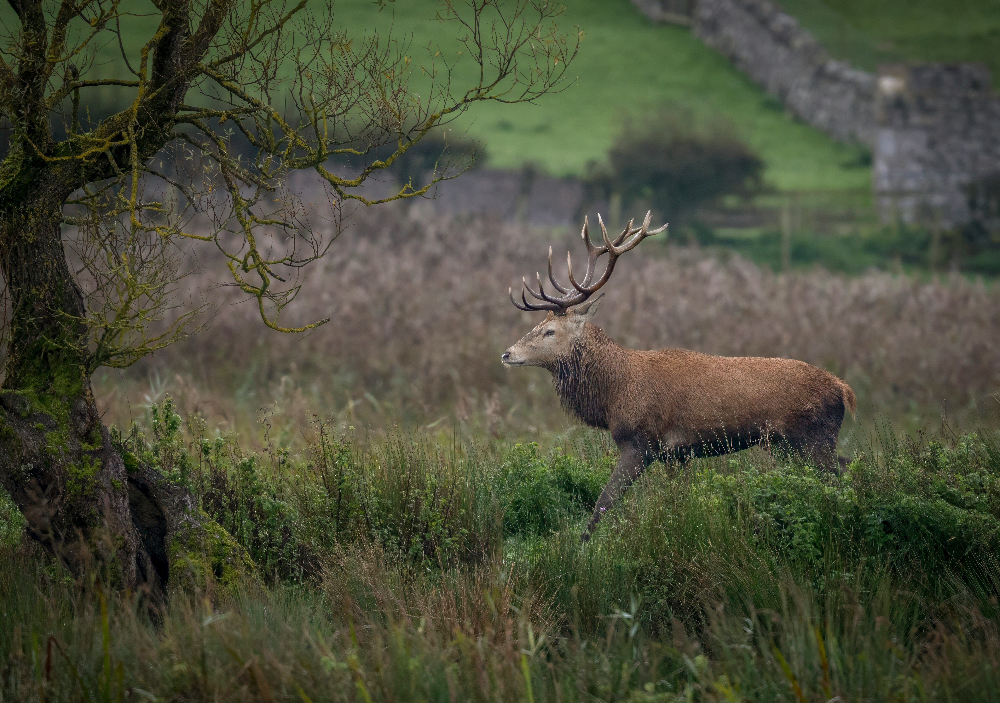

Rewilding in Scotland
Rewilding in Scotland aims to restore natural ecosystems by allowing forests, peatlands, and wildlife to recover and thrive. Across the Highlands and beyond, communities and conservation groups are reintroducing native species, such as beavers and red kites, and restoring habitats that were lost to centuries of deforestation and intensive land use. These efforts not only bring back biodiversity but also help store carbon, reduce flooding, and create more resilient landscapes for future generations.